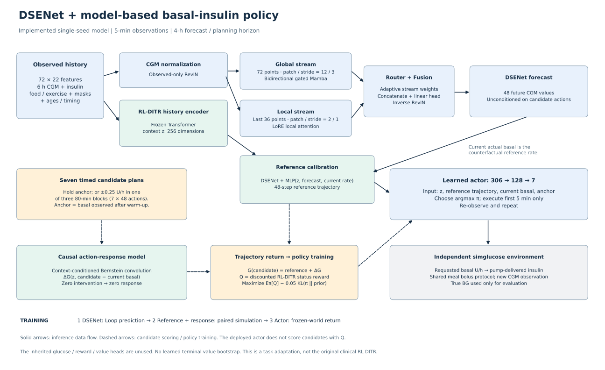
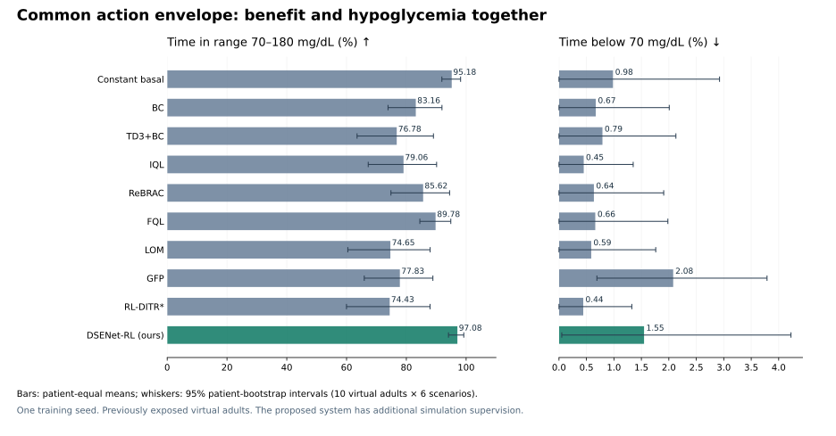

本轮结果如何理解
共同动作范围下，本方法 BG TIR 为 97.08%，TBR<70 为 1.55%，TBR<54 为 0.57%，失败 0/60。在这张包含固定参考的 10 行表中，按完整 TIR 排序，本方法排第 1；最高者为 DSENet-RL (ours)。
经过 8 项外部方法比较的 Holm 校正，TIR 显著高于：BC、TD3+BC、IQL、ReBRAC、FQL、LOM、GFP、RL-DITR*。这只是特定虚拟队列、场景和单个训练 seed 下的比较；不能据此宣称所有指标最优或算法普遍优越。
收益伴随低糖代价：外部方法中 FQL 的 TIR 最高（89.78%）；本方法提高 7.30 个百分点，但 TBR<70 从 0.66% 升至 1.55%，TBR<54 从 0.25% 升至 0.57%。本方法 TBR<54 是主表最高值，不能称为全面最优。
仍有训练信息混淆：本方法使用了额外仿真配对监督及已有仿真训练编码器，其他离线方法使用 Loop。因此主表是同一评估协议下的控制系统比较，尚不是严格同训练数据的算法优势证明。额外信息在主表以 L+S 标出，没有隐藏在脚注之外。
01 / 当前模型结构

论文用矢量 PDF可编辑 SVGPNG逐模块说明与源码链接
历史为 72×22，即过去 6 小时、5 分钟一格。DSENet 只读 CGM，有效观测参与 RevIN；全局分支采用双向 gated Mamba，patch/stride=12/3（60/15 分钟）；局部 LoRE 分支读取最近 36 点，patch/stride=2/1（10/5 分钟）。Router/Fusion 输出未来 48 点。四个 patch 参数按验证集固定规则选择，不能把微小选择收益夸大为稳定结论。
另一条冻结 Transformer 路径读取全部历史特征，输出 256 维上下文。参考校准 MLP 加上因果动作响应模块，将 CGM 预测变为候选动作后的血糖轨迹。旧的血糖、奖励、价值头不参与；没有旧 V 的末端 bootstrap。
策略为 306→128→7 的小 MLP。训练目标是冻结模型下的期望折扣回报减 0.05 KL；七个计划由保持参考基础率，或某个 80 分钟块 ±0.25 U/h 构成。每次仅执行第一个 5 分钟动作，再重新观察。七个未来计划在当前时刻只有三种实际基础率取值，actor 推理不逐候选计算 Q。
02 / RL 是否已经训练结束
是：当前版本的预定训练已完成。DSENet 候选均训练 3 epochs，最终所选 P03 使用验证选中的第 1 epoch 权重；参考/响应模块训练 100 epochs；策略 seed 260915 完整遍历 225 位患者、1,653,421 个起点，共 6,580 次更新、1 epoch。策略训练前后环境模型哈希一致，策略参数已改变。
这不等于已经证明收敛或性能达标。既定预算结束是日志事实；单次训练没有覆盖随机种子稳定性，当前个体低糖风险仍未解决。此次新增基线全部按固定预算训练，不根据这 60 个场景再选超参、checkpoint 或丢弃失败方法。
| 新增方法 | Seed | RL更新 | 额外GMM更新 | Batch | Actor LR | Q LR | 实测训练时间 | Checkpoint SHA256前缀 |
|---|
| TD3+BC | 260915 | 50000 | 0 | 256 | 0.0001 | 0.0003 | 5.78 min | 4e77a2405ca506c1 |
| IQL | 260915 | 50000 | 0 | 256 | 0.0001 | 0.0003 | 22.61 min | d8e6a660e339d397 |
| LOM | 260915 | 60000 | 10000 | 256 | 0.0001 | 0.0003 | 7.78 min | e7bd67a3ed0a4b82 |
| GFP | 260915 | 50000 | 0 | 256 | 0.0001 | 0.0003 | 15.23 min | 060b44d6f6bef85d |
TD3+BC / IQL / GFP 各 50k 更新；LOM 先 10k GMM、再 50k RL，GMM 随后冻结。BC、ReBRAC、FQL和RL-DITR已训练权重复用。所有时间来自本机实际日志，部分任务并发执行，不能作为算法速度排行榜。完整配置、日志及 SHA256 见证据文件。
GFP 为按作者 MIT 实现核对的 PyTorch 任务适配；LOM 按论文公式独立实现，保留两阶段和 mode selection。LOM 论文与公开代码的 advantage 基准不一致，本次采用论文中的所选 mode 均值，差异已记录。旧基线保留既有开发选择，新方法采用固定论文参数适配，尚未进行等量的任务超参数搜索。所有算法均有 Loop 状态、奖励、步长和预算适配，不声称复现其原始 D4RL/OGBench 分数。
03 / 正文外部方法大表
统一设置：10 位已曝光虚拟成人 × 2 个餐食随机种子 × 3 个餐时 bolus 条件（1.0 / 0.8 / 1.2），每方法 60 条三天轨迹；前 6h 预热不计入指标。共同 CGM 传感器、胰岛素泵和已宣布餐食 bolus；策略只能改变基础输注。外部策略输出应用相同的“预热实际基础率 ±0.25 U/h”范围。预热基础率和餐时 bolus 是很强的共同先验，须随表交代。同执行范围仍不等于同策略动作集：本方法即时只有三个离散值，其他策略投影后连续；本方法 actor 显式输入持续 anchor，其余网络仍只输入 72×22 历史（外置投影器共享 anchor）。这些结构差异没有被限幅实验消除。
数值：先在每位患者内平均 6 个场景，再对 10 位患者等权平均。± 为患者间样本 SD，不是训练 seed SD。TIR 方括号为提前终止后的未知结局上下界；其他血糖指标按已观测段计算。L=Loop，L+S=Loop及额外仿真训练信息。Projection=外置动作限幅触发率；本方法的同范围限制已内置，因此 0% 不表示没有动作约束。
| Method | Year / venue | Training data | TIR70-180 % (SD or missing bounds) | TBR70 % | TBR54 % | TAR180 % | TAR250 % | Mean BG mg/dL | CV % | LBGI | HBGI | Failures / episodes | Coverage % | Projection % |
|---|
| Constant basal | — / Control | warmup | 95.18 ± 5.41 | 0.98 ± 3.02 | 0.41 ± 1.28 | 3.84 ± 4.22 | 0.00 ± 0.00 | 129.11 ± 7.24 | 17.83 ± 4.44 | 0.47 ± 0.64 | 1.70 ± 0.73 | 0/60 | 100.00 ± 0.00 | 0.00 ± 0.00 |
| BC | — / Imitation | L | 83.16 ± 15.36 | 0.67 ± 2.12 | 0.32 ± 1.00 | 16.17 ± 15.60 | 1.34 ± 2.40 | 145.95 ± 15.31 | 19.19 ± 5.15 | 0.28 ± 0.47 | 3.83 ± 2.39 | 0/60 | 100.00 ± 0.00 | 59.10 ± 8.19 |
| TD3+BC | 2021 / NeurIPS | L | 76.78 ± 21.78 | 0.79 ± 2.10 | 0.40 ± 1.26 | 22.42 ± 22.19 | 2.16 ± 3.83 | 152.19 ± 22.92 | 17.02 ± 3.99 | 0.36 ± 0.55 | 4.87 ± 3.48 | 0/60 | 100.00 ± 0.00 | 93.05 ± 3.12 |
| IQL | 2022 / ICLR | L | 79.06 ± 19.48 | 0.45 ± 1.42 | 0.11 ± 0.36 | 20.49 ± 19.68 | 1.26 ± 2.20 | 154.13 ± 18.91 | 16.10 ± 4.13 | 0.13 ± 0.31 | 4.64 ± 2.87 | 0/60 | 100.00 ± 0.00 | 73.33 ± 10.47 |
| ReBRAC | 2023 / NeurIPS | L | 85.62 ± 16.89 | 0.64 ± 2.01 | 0.22 ± 0.71 | 13.75 ± 17.05 | 0.27 ± 0.85 | 144.80 ± 18.09 | 16.01 ± 4.16 | 0.20 ± 0.43 | 3.41 ± 2.43 | 0/60 | 100.00 ± 0.00 | 41.54 ± 23.84 |
| FQL | 2025 / ICML | L | 89.78 ± 8.77 | 0.66 ± 2.09 | 0.25 ± 0.79 | 9.56 ± 8.69 | 0.15 ± 0.47 | 140.71 ± 11.35 | 16.70 ± 3.85 | 0.24 ± 0.44 | 2.86 ± 1.39 | 0/60 | 100.00 ± 0.00 | 46.37 ± 4.35 |
| LOM | 2025 / ICLR | L | 74.65 ± 23.53 | 0.59 ± 1.86 | 0.28 ± 0.88 | 24.76 ± 23.80 | 2.24 ± 4.02 | 158.16 ± 23.36 | 15.73 ± 4.12 | 0.17 ± 0.43 | 5.36 ± 3.67 | 0/60 | 100.00 ± 0.00 | 97.34 ± 1.74 |
| GFP | 2026 / ICLR | L | 77.83 ± 19.52 | 2.08 ± 2.62 | 0.47 ± 1.48 | 20.09 ± 19.75 | 2.04 ± 3.67 | 146.71 ± 20.39 | 18.23 ± 3.92 | 0.65 ± 0.66 | 4.41 ± 3.14 | 0/60 | 100.00 ± 0.00 | 84.63 ± 5.37 |
| RL-DITR* | 2023 / Nature Medicine | L | 74.43 ± 23.87 | 0.44 ± 1.40 | 0.00 ± 0.00 | 25.13 ± 24.09 | 2.27 ± 4.09 | 159.32 ± 23.06 | 15.44 ± 3.88 | 0.11 ± 0.27 | 5.45 ± 3.70 | 0/60 | 100.00 ± 0.00 | 96.58 ± 4.38 |
| DSENet-RL (ours) | — / This work | L+S | 97.08 ± 4.50 | 1.55 ± 3.89 | 0.57 ± 1.79 | 1.37 ± 1.90 | 0.00 ± 0.00 | 121.20 ± 6.54 | 19.25 ± 4.88 | 0.73 ± 0.82 | 1.14 ± 0.56 | 0/60 | 100.00 ± 0.00 | 0.00 ± 0.00 |
正文双栏 LaTeX table*全列 LaTeX完整 CSV方法与权重清单评估合同
* RL-DITR 使用最初的 categorical reward/value 连续基础率任务适配权重 R03；未把后来添加模拟、修改目标的 R05/H02 放进此行。原论文是住院 T2D 胰岛素滴定，本任务是成人 T1D 基础输注；这一跨任务适配必须保留脚注。它不是作者原临床试验复现。内部变体仍保留在旧实验记录，供消融和开发审计使用。
04 / 与本方法的配对差异

对比图矢量PDF
下表为 ours − comparator，单位为百分点。TIR 用患者聚类 bootstrap 10,000 次；完整结局再计算 1,024 种精确符号翻转检验（假设患者间差值在零假设下符号对称/可交换），8 个外部方法构成固定 Holm 家族。缺失 TIR 的方法不生成真实 TIR 的 p 值；其未完成比较在校正家族中保留。固定基础率参考不进入该家族。置信区间均不覆盖训练 seed 不确定性。
| Comparator | ΔTIR | 95% patient CI | ΔTBR70 | TIR Holm p | 可检验状态 |
|---|
| Constant basal | +1.90 | [+0.43, +3.58] | +0.57 | — | complete paired TIR |
| BC | +13.91 | [+5.17, +23.34] | +0.88 | 0.0273 | complete paired TIR |
| TD3+BC | +20.29 | [+7.88, +33.92] | +0.76 | 0.0273 | complete paired TIR |
| IQL | +18.02 | [+6.89, +30.23] | +1.10 | 0.0273 | complete paired TIR |
| ReBRAC | +11.46 | [+2.28, +22.87] | +0.91 | 0.0273 | complete paired TIR |
| FQL | +7.30 | [+2.62, +12.44] | +0.89 | 0.0273 | complete paired TIR |
| LOM | +22.42 | [+8.98, +36.89] | +0.96 | 0.0273 | complete paired TIR |
| GFP | +19.25 | [+8.17, +31.40] | -0.53 | 0.0156 | complete paired TIR |
| RL-DITR* | +22.65 | [+8.96, +37.31] | +1.11 | 0.0273 | complete paired TIR |
全部差值与区间逐患者统计与原始文件哈希
05 / 低糖与个体风险不能被平均 TIR 掩盖
| Method | 低糖事件总数 | <54持续≥120min事件 | 最长事件低糖分钟 | 最差患者TBR70 | 基础输注量 U/day | 动作总变差/day |
|---|
| Constant basal | 9 | 4 | 390 | adult#009: 9.57% | 30.05 | 0.00 |
| BC | 6 | 4 | 355 | adult#009: 6.69% | 26.72 | 5.17 |
| TD3+BC | 8 | 4 | 450 | adult#009: 6.67% | 26.17 | 3.82 |
| IQL | 4 | 0 | 290 | adult#009: 4.50% | 25.01 | 3.14 |
| ReBRAC | 6 | 3 | 345 | adult#009: 6.36% | 26.72 | 6.61 |
| FQL | 6 | 3 | 345 | adult#009: 6.61% | 27.43 | 22.99 |
| LOM | 4 | 3 | 410 | adult#009: 5.87% | 24.58 | 1.22 |
| GFP | 29 | 4 | 475 | adult#009: 8.08% | 27.55 | 10.97 |
| RL-DITR* | 4 | 0 | 290 | adult#009: 4.42% | 24.23 | 0.68 |
| DSENet-RL (ours) | 18 | 6 | 380 | adult#009: 12.39% | 32.21 | 8.76 |
低糖事件须持续至少 15 分钟，恢复按连续 15 分钟 ≥70 mg/dL；最长低糖分钟数与事件跨度不同。<54 mg/dL 属于生化低糖，不能仅由仿真血糖判为需要他人协助的临床严重低血糖。无提前终止也不表示没有低糖风险。
本方法 adult#009 的患者平均 TBR<70 为 12.39%、TBR<54 为 5.66%，6 次连续低于 54 mg/dL 至少 120 分钟，最长低糖事件累计低糖 380 分钟。若正文只强调平均 TIR 而略去此结果，会误导读者。当前研究证据不能宣称已完成实际患者准入。
06 / 原生动作范围：限制本身贡献了多少
这里保留各模型原来的动作支持范围；既有 BC、ReBRAC、FQL、本方法和固定参考的同场景结果直接复用，不重复训练或制造新 seed。对照此表与主表，可以观察共同限幅是否主导收益。该表本身动作支持不同，不能用它独立证明算法优越性。
| Method | Year / venue | Training data | TIR70-180 % (SD or missing bounds) | TBR70 % | TBR54 % | TAR180 % | TAR250 % | Mean BG mg/dL | CV % | LBGI | HBGI | Failures / episodes | Coverage % | Projection % |
|---|
| Constant basal | — / Control | warmup | 95.18 ± 5.41 | 0.98 ± 3.02 | 0.41 ± 1.28 | 3.84 ± 4.22 | 0.00 ± 0.00 | 129.11 ± 7.24 | 17.83 ± 4.44 | 0.47 ± 0.64 | 1.70 ± 0.73 | 0/60 | 100.00 ± 0.00 | 0.00 ± 0.00 |
| BC | — / Imitation | L | [52.41, 63.94] | 7.66 ± 8.29 | 1.83 ± 2.44 | 33.49 ± 7.16 | 16.44 ± 10.73 | 172.91 ± 28.77 | 50.26 ± 18.61 | 1.64 ± 1.49 | 11.08 ± 5.81 | 21/60 | 88.47 ± 16.82 | 0.00 ± 0.00 |
| TD3+BC | 2021 / NeurIPS | L | [11.57, 27.43] | 0.00 ± 0.00 | 0.00 ± 0.00 | 85.51 ± 11.22 | 57.03 ± 33.05 | 299.86 ± 84.95 | 22.50 ± 10.31 | 0.00 ± 0.00 | 34.31 ± 19.06 | 14/60 | 84.15 ± 31.02 | 0.00 ± 0.00 |
| IQL | 2022 / ICLR | L | 39.84 ± 19.96 | 0.00 ± 0.00 | 0.00 ± 0.00 | 60.16 ± 19.96 | 25.30 ± 26.54 | 211.17 ± 42.44 | 22.44 ± 5.58 | 0.01 ± 0.02 | 15.28 ± 8.93 | 0/60 | 100.00 ± 0.00 | 0.00 ± 0.00 |
| ReBRAC | 2023 / NeurIPS | L | 75.39 ± 30.75 | 0.45 ± 1.38 | 0.09 ± 0.29 | 24.16 ± 30.99 | 4.94 ± 11.89 | 157.07 ± 34.41 | 16.30 ± 4.51 | 0.17 ± 0.33 | 5.50 ± 5.73 | 0/60 | 100.00 ± 0.00 | 0.00 ± 0.00 |
| FQL | 2025 / ICML | L | [53.82, 63.48] | 5.00 ± 6.10 | 1.77 ± 2.41 | 37.33 ± 17.97 | 16.06 ± 19.18 | 182.93 ± 46.88 | 38.31 ± 19.31 | 1.33 ± 1.46 | 12.20 ± 10.31 | 13/60 | 90.34 ± 19.87 | 0.00 ± 0.00 |
| LOM | 2025 / ICLR | L | [13.74, 33.35] | 0.00 ± 0.00 | 0.00 ± 0.00 | 82.56 ± 13.90 | 48.33 ± 32.20 | 274.38 ± 73.25 | 22.34 ± 11.94 | 0.00 ± 0.00 | 28.65 ± 16.42 | 16/60 | 80.39 ± 33.53 | 0.00 ± 0.00 |
| GFP | 2026 / ICLR | L | [15.38, 41.86] | 8.64 ± 14.08 | 6.74 ± 11.55 | 68.09 ± 22.78 | 40.09 ± 30.00 | 238.11 ± 69.45 | 29.53 ± 17.19 | 4.79 ± 8.48 | 23.24 ± 13.70 | 23/60 | 73.52 ± 34.65 | 0.00 ± 0.00 |
| RL-DITR* | 2023 / Nature Medicine | L | [11.38, 33.11] | 0.00 ± 0.00 | 0.00 ± 0.00 | 84.44 ± 11.58 | 53.51 ± 31.09 | 282.41 ± 71.56 | 22.93 ± 11.97 | 0.00 ± 0.00 | 30.41 ± 16.09 | 18/60 | 78.27 ± 35.77 | 0.00 ± 0.00 |
| DSENet-RL (ours) | — / This work | L+S | 97.08 ± 4.50 | 1.55 ± 3.89 | 0.57 ± 1.79 | 1.37 ± 1.90 | 0.00 ± 0.00 | 121.20 ± 6.54 | 19.25 ± 4.88 | 0.73 ± 0.82 | 1.14 ± 0.56 | 0/60 | 100.00 ± 0.00 | 0.00 ± 0.00 |
附表 LaTeXCSV完整风险与输注附表
07 / 为什么评价不止 TIR、TBR
近期领域论文并不只看两个百分比：PPO-AP（2025，Table 2）同时报告风险指数与治疗失败；GUIDE（2026预印本，Tables IV/VI）报告 TIR/TBR/TAR/CV 和患者级配对统计；PAINT（ECAI 2025 原始稿）还使用 Magni risk。风险公式不同的数值不能混用。本表采用项目冻结的 LBGI/HBGI 实现。
原 RL-DITR临床主要终点是平均每日指尖血糖，并另评 TIR/TBR/TAR/CV。剂量 MAE、PCC 或离线 WIS/ESS 属于不同证据；在没有可靠行为策略概率的连续基础率任务中，不能草率补一个 WIS 数字充实表格。
预测器也有独立评价：以下为此前已完成的真实 Loop 患者隔离评估，单位 mg/dL。它说明预测误差，不能代替 RL 闭环性能。该小表只有便宜预测参考，并不是最新血糖预测模型的全面 SOTA 对比。
| Method | RMSE30 | RMSE60 | RMSE120 | RMSE240 |
|---|
| Persistence | 22.25 | 36.11 | 51.08 | 67.95 |
| Linear trend | 26.19 | 52.45 | 101.87 | 197.53 |
| DSENet-Loop (ours) | 19.55 | 33.20 | 46.13 | 58.81 |
完整文献、指标定义、阈值与筛选记录
08 / 方法来源与复现范围
另查到 MeanFlowQL（AAAI 2026）和 Value Flows（ICLR 2026），未纳入本轮训练，不能写成复现失败。糖尿病专用 PPO-AP 是在线全输注控制，GUIDE 含进食/bolus动作，不能直接冒充本任务同设置基线；PAINT 本次未核验到完整官方实现。详见近期方法筛选。
09 / 验证与仍未解决的要求
四个新增方法均通过真实数据 CUDA 有限损失、参数更新、动作范围及保存加载一致性检查。LOM 的分阶段冻结、实际后继动作和 mode 选择经过机制检查。场景生成和仿真函数保持原样；固定基础率三天轨迹与旧记录完全相同。两套表均由同一评分器重算原始轨迹，并核对共同场景、权重以及主表动作范围。
仍未解决：严格同训练信息的算法比较、多训练 seed 稳定性、未曝光虚拟患者泛化、更长时段和更困难餐食环境、adult#009 低糖问题。此次提供的是可审计的真实对比表与 LaTeX 格式，不保证仅凭这组实验即可被 A 类会议接收。必须随正文保留数据与动作合同，不能删掉限制后声称 SOTA。
CUDA 检查评估等价检查逐条结果重算交接与证据清单